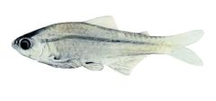
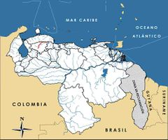

Creagrutus crenatus
| Dientefrío del Tocuyo | |
|---|---|
|  | |
| Riesgo de extinción | |
 En peligro (UICN) | |
| Clasificación científica | |
| Reino: | Animalia |
| Filo: | Chordata |
| Clase: | Actinopterygii |
| Orden: | Characiforme |
| Familia: | Characidae |
| Género: | Creagrutus |
| Especie: | Creagrutus crenatus |
| Nombre binomial | |
|
Creagrutus crenatus Vari et Harold, 2001 | |
| Distribución | |
|
 Mapa de distribución de Creagrutus crenatus | |
Contenido
Información de Evaluación
- Categoría y Criterio Regional: En Peligro B1ab(iii)
- Fecha de Evaluación Regional: 2015
- Evaluadores: Jesús Morales-Campos y Ariany García-Rawlins
- Categoría y Criterio Global: No Evaluado
Justificación
Evaluaciones Previas
1999: No Evaluado (NE)
2008: Vulnerable (VU)
Información General
Nombres comunes
Dientefrío del Tocuyo, vuélvete loco del Tocuyo, sardinita del Tocuyo, Tocuyo characin.
Notas taxonómicas
Sinónimos
Descripción
Es un pez que mide apenas 10 cm de longitud, pero dentro de su género es una de las especies más grandes en las cuencas del Caribe. Su forma es característica de las sardinitas: cuerpo ovoide y alargado, coloración dorsal gris aceituna en el dorso y abdomen blanco plateado. Tiene la mandíbula superior prominente y proyectada (particularidad del género y motivo del nombre común de «dientefrío»), y una mancha rojiza brillante en la parte superior del ojo. Sus aletas son impares y levemente coloreadas. Posee una mancha humeral a la manera de una barra vertical en ambos lados del cuerpo. Se le reconoce a simple vista por el color blanco de los radios mayores de sus aletas pectorales y pélvicas (Román-Valencia 2005). Es muy similar a Creagrutus lassoi, especie endémica de la vertiente contigua al río Aroa reportada como muy abundante (Rodríguez-Olarte et al. 2003, Rodríguez-Olarte et al. 2006a). Es posible que ambas coincidan en las planicies de las tierras bajas en las dos cuencas.
Distribución
Endémica de la cuenca media del río Tocuyo, en las depresiones de Carora, Barquisimeto y Quíbor y en el piedemonte andino, donde predomina un clima semiárido. Ha sido reportada principalmente en las desembocaduras medias y bajas de los ríos Curarigua y Tocuyo, así como en varios afluentes menores del estado Lara (Marnr 1979b).
- Sistema: Dulceacuícola
- Bioregión:
- Intervalo altitudinal (m):
- Endémica: Sí
Situación
Su identificación es confusa. Al parecer es la única especie del género en la cuenca media del río Tocuyo. En muestreos estandarizados durante varios años fue considerada común aunque bastante restringida (Lasso-Alcalá et al. 2001). No se disponen de datos sobre su biología. Se ha observado en pequeños grupos en las corrientes y remansos, buscando alimento en el sustrato. No se cuenta todavía con información básica que permita conocer a fondo su grado de amenaza, pero su condición endémica y la baja densidad poblacional que presenta son indicadores de su vulnerabilidad. La intervención severa de los frágiles ambientes acuáticos en su localidad típica se prevé continúe en el futuro cercano, lo que sugiere que Creagrutus crenatus podrá ser afectada significativamente, y justifica su clasificación como En Peligro, además de estar presente en una extensión limitada a 3512,81 km2.
- EOO (km2): 3512,81
- AOO (km2): Temporalmente sin información
- Tendencia Poblacional: Desconocida
Amenazas
Dientefrío del Tocuyo se distribuye principalmente en los ríos de una región reconocida como semidesértica. La mayoría de estas aguas, al ser intermitentes, son ecosistemas frágiles y temporales que actúan como sumideros para las poblaciones de peces que quedan atrapados durante las sequías. La intensa extracción del recurso hídrico para el riego y consumo humano es una amenaza fundamentada. En la mayoría de los afluentes existen embalses de origen antrópico que al parecer han desecado los cursos inferiores de algunos ríos. Por otro lado, en los cauces permanentes, que son muy pocos, están casi todos los drenajes agropecuarios y los centros urbanos ribereños. Solo el parque nacional Cerro Saroche se ubica en la región semidesértica, pero sus drenajes son intermitentes, incluso de carácter esporádico. Las principales corrientes (Tocuyo, Curarigua, Quediche, etc.) no se hallan protegidas en sus cuencas medias. Otra amenaza potencial es la presencia de especies introducidas en el hábitat de este pez, donde se ha observado el bagre chorrosco (Pimelodus blochii), mientras que en embalses y lagunas artificiales cercanas se reconocen otras como tilapia (Oreochromis spp.) y cachama (Colossoma macropomun) (Marnr 1979b, Lasso-Alcalá et al. 2001).
Conservación
No se ha tomado ninguna medida en particular para su preservación, aunque estaría protegida de modo parcial en el parque nacional Cerro Saroche. Otras áreas protegidas de mayor cobertura en la cuenca del río Tocuyo no garantizan necesariamente la protección de la ictiofauna dulceacuícola, pues o se ubican en altitudes muy elevadas donde la riqueza de especies es muy baja (parque nacional Dinira), o en la región semiárida, con muy pocos ambientes acuáticos. Solo el parque nacional Cueva de la Quebrada del Toro protege parte de una pequeña cuenca. No obstante, la seguridad que ofrecen las áreas protegidas a las cuencas incide de forma directa en el estado de conservación de los ríos, y por ende en su biota. En este sentido, dado que en la localidad de C. crenatus hay muy pocos ríos con corrientes constantes, es prioritario seleccionar al menos uno de ellos para el manejo y resguardo de la ictiofauna. Así, se ha reconocido que la desembocadura del Curarigua presenta una aparente menor intervención entre los cauces de la región semidesértica. Además, este afluente del río Tocuyo no está represado y corre de modo constante. Otras subcuencas valiosas para su conservación y la del resto de la ictiofauna de la zona son las de los ríos Villegas, Camoruco, Totoremo y Araurima (Lasso-Alcalá et al. 2001).
Autorías
Autores originales
Douglas Rodríguez-Olarte, Jorge L. Corone y Donald C. Taphorn
Colaboradores
Ilustrador
Ximenamaria Rausseo
Referencias
- Lasso-Alcalá, O., Lasso, C. y Meri, J. (2001). Introducción de peces en aguas continentales de Venezuela: una propuesta para su clasificación y evaluación preliminar. Resumen. Páginas: 99. En: Actas IV Congreso Venezolano de Ecología. Mérida.
- Marnr. (1979b). Inventario nacional de tierras región oriental Delta del Orinoco-Golfo de Paria. Dirección General Sectorial de Información e Investigación del Ambiente. Serie Informes Científicos-Zona 2/1C/21. Maracay.
- Rodríguez, J. P. y Rojas-Suárez, F. (1999). Libro Rojo de la Fauna Venezolana, segunda edición. PROVITA, Fundación Polar. Caracas. 444 pp.
- Rodríguez, J. P. y Rojas-Suárez, F. (Eds.) (2008). Libro Rojo de la Fauna Venezolana, tercera edición. Provita y Shell Venezuela, S. A. Caracas, Venezuela. 364 pp.
- Rodríguez-Olarte, D., Amaro, A., Coronel, J. y Alvarado, H. (2003). Los peces de la cuenca del río Aroa (cuenca del Caribe, Venezuela): diversidad e importancia. Páginas: 142. En: Actas V Congreso Venezolano d Ecología. Porlamar, Nueva Esparta.
- Rodríguez-Olarte, D., Amaro, A., Coronel, J. y Taphorn, D. (2006a). Integrity of fluvial fish communities is subject to environmental gradients in mountain streams, Sierra de Aroa, North Caribbean coast, Venezuela. Neotropical Ichthyology 4(3): 319-328.
- Rodríguez-Olarte, D., Coronel, J., Taphorn, D. C. (2015). Dientefrío del Tocuyo, Creagrutus crenatus. En: J.P. Rodríguez, A. García-Rawlins y F. Rojas-Suárez (eds.) Libro Rojo de la Fauna Venezolana. Cuarta edición. Provita y Fundación Empresas Polar, Caracas, Venezuela. Recuperado de: animalesamenazados.provita.org.ve/content/dientefrio-del-tocuyo
- Román-Valencia, C. (2005). Sinopsis comentada de las especies del género Bryconamericus (Teleostei: Characidae) de Venezuela y norte del Ecuador, con la descripción de una nueva especie para Venezuela. Memoria de la Fundación La Salle de Ciencias Naturales 163: 27-52.